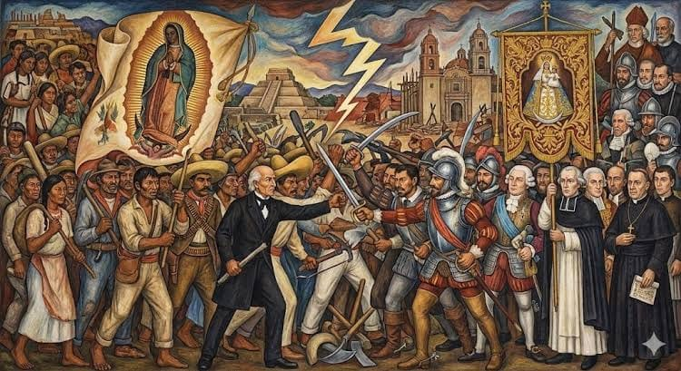
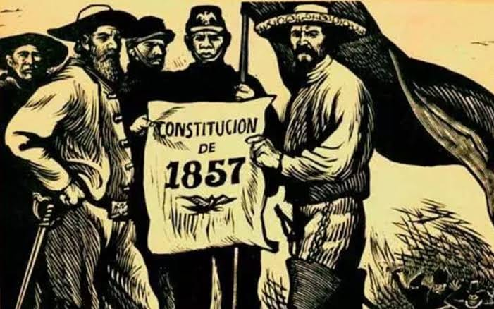

Contexto Histórico
Tras la consumación de la Independencia en 1821, México heredó una estructura colonial profundamente desigual, corporativa y dependiente, enfrentando además una severa bancarrota financiera.
Durante las primeras cuatro décadas de vida independiente, el país se sumergió en una inestabilidad política crónica, constantes levantamientos armados y la pérdida de más de la mitad de su territorio nacional, debatiéndose fuertemente entre el modelo conservador y el modelo liberal.

México en el siglo XIX y la pugna de proyectos de nación.Causas del Proceso
Poder Corporativo Excesivo
La Iglesia católica y el ejército poseían fueros especiales, tribunales propios y controlaban gran parte de la propiedad territorial, operando como poderes ajenos al control del Estado civil.
Inestabilidad y Debilidad Nacional
La dolorosa derrota ante Estados Unidos (1846-1848) y la persistente dictadura de Antonio López de Santa Anna evidenciaron la urgencia radical de transformar las instituciones del país.
Desarrollo Histórico

Promulgación y defensa de la Constitución Federal de 1857.El proceso se desarrolló a través de acontecimientos clave ordenados cronológicamente:
- Plan de Ayutla (1854): Pronunciamiento político para derrocar la dictadura santannista.
- Leyes de Reforma (1855-1857): Ordenamientos como la Ley Juárez, Ley Lerdo y Ley Iglesias para abolir privilegios.
- Constitución de 1857: Carta magna liberal que consagró las garantías individuales y la educación laica.
- Guerra de Reforma (1858-1861): Cruento conflicto civil de tres años entre liberales y conservadores.
- Intervención Francesa (1862-1867): Resistencia patriótica liderada por Benito Juárez frente a las tropas extranjeras.
Personajes y Grupos Involucrados
Benito Juárez
Presidente de la República y máxima figura del liberalismo, símbolo de la resistencia y defensa de la soberanía.
Melchor Ocampo
Ideólogo radical y principal redactor de las Leyes de Reforma; estructuró las bases del Estado laico.
Ignacio Zaragoza
Destacado militar liberal e insigne defensor de la patria al comandar el triunfo en la Batalla de Puebla.
Consecuencias del Proceso
Ámbito Político y Jurídico
Se consolidó la República representativa y federal, estableciendo la separación definitiva entre la Iglesia y el Estado y la primacía de las leyes civiles.
Ámbito Social y Económico
Se proclamó la igualdad jurídica de todos los ciudadanos ante la ley y la desamortización de bienes corporativos dinamizó la economía nacional.
Línea del Tiempo
Evolución cronológica de los acontecimientos fundamentales del liberalismo mexicano:
Plan de Ayutla
Inicia el movimiento armado para derrocar la dictadura de Santa Anna.
Leyes de Reforma
Se suprimen los fueros militares y eclesiásticos con la Ley Juárez y Ley Lerdo.
Constitución Federal
Promulgación de la carta magna liberal defensora de los derechos humanos.
Guerra de Reforma
Guerra civil de tres años por el modelo de nación entre liberales y conservadores.
República Restaurada
Triunfo definitivo sobre la Intervención Francesa y consolidación del Estado mexicano.
Conclusión Personal
"Considero que estudiar el liberalismo mexicano es indispensable porque representa el momento exacto en que México cimentó su identidad como una nación moderna, soberana e independiente de poderes religiosos o extranjeros. Las leyes, los derechos y el Estado laico conquistados durante el siglo XIX por personajes como Benito Juárez son los pilares fundamentales que hoy nos garantizan libertades civiles básicas y convivencia democrática."
Fuentes Consultadas
- Rivera Catro, F. (2017). El liberalismo decimonónico en México.UNAM, Instituto de Investigaciones Hurídicas.
- Universidad Autónoma del Estado de México (UAEMéx).(2020).El liberalismo en México.
- Instituto Nacional de Estudios Históricos de las Revoluciones de México (INEHRD).
- Krauze, Enrique. México: Biografía del poder. Fondo de Cultura Económica.